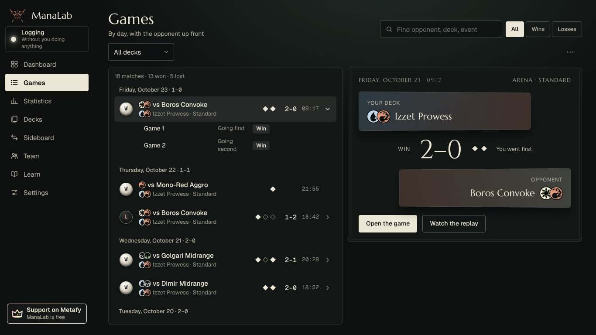
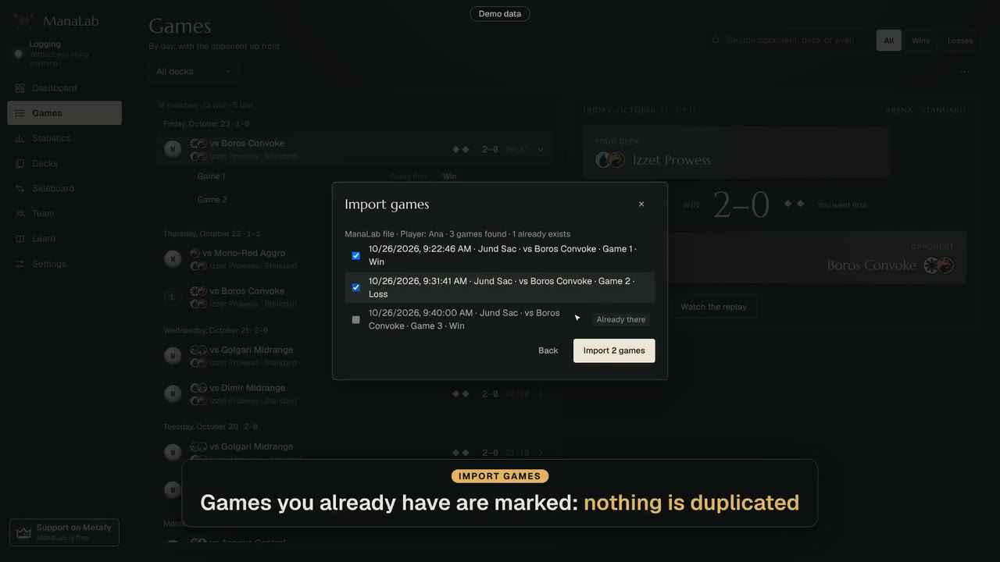
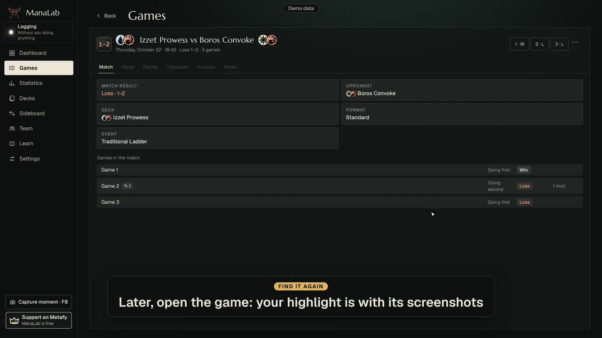
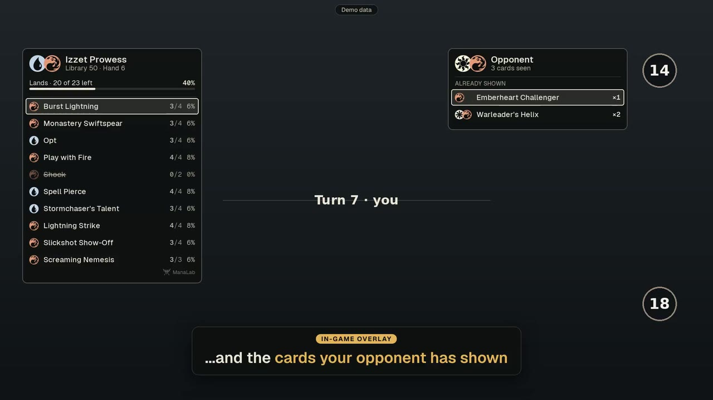
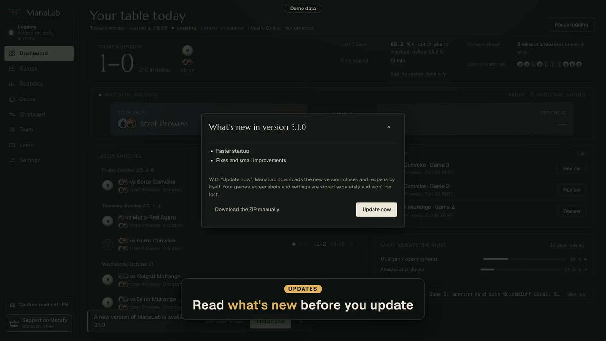

ManaLab ガイド
無料トラッカー ManaLab の各機能の役割と使い方です。Arena と Magic Online の両方に対応し、戦績の記録と確認の方法を、主要な機能とAIコーチを中心に説明します。
ManaLabとは
ManaLabは、MTG ArenaとMagic Online（MTGO）向けの無料トラッカーです。行ったすべての対戦の戦績をお使いのPCに保存し、何がうまくいっているかを示します。デッキ別、対戦相手別、マッチアップ別の勝率、マリガン、ミス、サイドボードの変更を確認できます。
アプリは無料です。有料なのはAIによる敗戦分析だけで、月6ドル。無料トライアルもあります。
はじめに
- ポータブル版（ZIP）をダウンロードして展開し、ManaLabを開きます。インストールは不要です。のちに更新するときは、新しいバージョンを古いフォルダーの上に展開してください。データはそのまま残ります。
- Arenaで「オプション」›「アカウント」を開き、「詳細ログ（プラグインサポート）」（Detailed Logs (Plugin Support)）を有効にします。その後Arenaを再起動してください。これがないとManaLabはArenaの対戦を読み取れません。Magic Onlineには設定は不要です。
- ゲームがまだ1つもない間は、パネルに「テーブルを準備しよう」が表示され、残りの手順と各ゲームが保存する内容が分かります。「隠す」を押すと、二度と表示されません。スタートガイドは 設定 › データと情報 の「スタートガイドを見る」からいつでも見直せます。
- ManaLabは起動すると自動で記録を始めます（設定 › ゲーム で変更できます）。以降、ArenaとMagic Onlineの対戦が自動で保存されます。サイドバーのManaLab名の下の枠に「記録中」と表示されます。
- ウィンドウモードまたはボーダーレスでプレイしてください。排他的フルスクリーンではオーバーレイは表示されません。
動作環境：Windows 10 または 11、そして Arena、Magic Online のどちらか、または両方。
Magic Online
ManaLabはArenaと同じようにMTGOを記録します。設定は不要で、「詳細ログ（プラグインサポート）」も、特別な設定もありません。ManaLabが記録中の状態でMagic Onlineを開くと、自動で認識されます。パネル上部の行にあるMagic Onlineの状態は、ゲームを見つけるまで「未検出」と表示され、その後はArenaと同じように対戦を追います。
すべてのフォーマットを記録します。初手とマリガン、先攻か後攻か、自分のデッキ、相手が見せたカード、ライフ、リプレイとタイムラインです。デッキ名は、リストが完全に一致すればMagic Onlineで保存した名前、そうでなければ色から付けられ、デッキで自分で入力した名前が置き換えられることはありません。
- オーバーレイ：デッキに残っているカードと、相手が見せたカードを、Magic Onlineの上に表示します（「オーバーレイ」を参照）。
- ハイライト：「瞬間を撮る」はMagic Onlineでも使えます（「スクリーンショットとハイライト」を参照）。ManaLabが自動でスクリーンショットを撮ることはありません。
- インポート：ゲームで「⋯」›「対戦をインポート」を押し、「Arena または Magic Online のログ」を選んで
mtgo.logを指定すると、ManaLabを閉じていたときの対戦を取り込めます。自分の対戦として数えられ、すでにある対戦は重複しません。 - ログの場所：設定 › ゲーム のMagic Onlineグループ、「mtgo.log ファイル」。Magic Onlineが別のフォルダーにログを保存している場合を除き、「既定」のままにしてください。
MTGOでの違い
- フェイズとタップ状態は推定です。Magic Onlineはこれらを送ってこないため、ManaLabはログだけから推定します。リプレイでは、推定したものに ≈ が付きます。正確とは限らないためです。
- トークンとエンブレム（宝物や血など）はリプレイにだけ表示されます。相手のカード、デッキリスト、オーバーレイには載りません。
- ログにテーブルの状態が含まれない場合、オーバーレイはArenaより表示が少なくなることがあります。
- サイドボード：Magic Onlineは、第2戦・第3戦に使うデッキを、そのゲームが始まるまで教えてくれません。そのためManaLabが確認します（次のセクション）。
サイトでもっと詳しく： Magic Online トラッカー：ManaLabが保存する内容と仕組み（英語）.
Magic Onlineのサイドボード
ゲームが終わると、Magic Onlineのログはサイドボーディングをしていても元のリストを繰り返します。実際のリストは次のゲームが始まって初めて届きます。そのため、サイドボーディングが始まると、Magic Onlineの上に小さなパネル「サイドボード · ゲーム N」が表示されます。ゲームからフォーカスを奪うことはなく、次のゲームが始まると自動で閉じます。ボタンは3つあります：
- 「この変更を使う」：同じ相手デッキとの前回の変更を繰り返します。前回がある場合にだけ表示されます。
- 「変更なし」：基本のリストのままにします。
- 「編集」：メインデッキとサイドボードを並べてManaLabで開きます。−で1枚外し、+で1枚入れ、カードを検索することもできます。「IN · OUT」のカウンターは数が合わないと警告しますが、そのまま確定することもできます。
パネルを無視すると、リストは未確認のままになります。するとオーバーレイに「リスト未確認」、≈ で始まる概算の確率、そして「≥ N 枚が場外(未特定)」が表示されます。ManaLabはデッキから何枚出たかは分かりますが、どのカードかは分かりません。サイドバーの「サイドボードを修正」で直せます。ゲーム中でもゲーム間でも可能です。どちらを選んでも、Magic Onlineが実際のリストを送ってきた時点で、ログの実際のリストが常に優先されます。
ゲーム終了後にも修正できます。ゲームでその対戦を開き、ゲームタブで「サイドボードを修正」を押します。これは、リストが未確認だった自分のMagic Onlineの対戦で、第2戦以降に表示されます。同じマッチで後に続く未確認のゲームは、あなたの修正をもとに再計算され、そのゲームは確認済みとして、統計、サイドボードガイド、AI分析に反映されます。
一度も確認されなかったゲームには、ゲームタブに「サイドボードは未確認」と表示されます。サイドボードガイドはそのゲームの変更を数えず、AI分析には変更が「なかった」のではなく「不明」だと伝えられます。
第2戦以降、ゲームタブには、元のリスト（第1戦）と比べて何をサイドボードから入れ、何を抜いたかが「元のリストとの比較」として表示されます。元のリストに戻っている場合は何も表示されません。パネルをオフにするには、設定 › オーバーレイ の「サイドボードの変更を確認する(Magic Online)」を使います。「サイドボードを修正」は引き続き使えます。
パネル：今日のテーブル
パネルのタイトルは「今日のテーブル」で、ManaLabが正しく記録しているかを確認できます。タイトルの下の1行に「記録中」（または「一時停止中」）と、各ゲームの状態が表示されます。ArenaとMagic Onlineは、それぞれ「監視中」「対戦中」「未検出」「停止中」のいずれかです。右上のボタンは「記録を一時停止」で、一時停止中は、今プレイする対戦が保存されないことを知らせる帯が出て、「再開」で記録が戻ります。その下には次のものが並びます：
- 今日のセッション：今日のマッチとゲームの成績、マッチごとに1列、右側には過去7日（その前の7日と比べた勝率）、現在の連続記録、プレイ時間、直近10マッチ。「セッションのまとめを見る」で全体のまとめが開きます。
- 進行中のマッチ：プレイ中は自分のデッキとゲーム番号が表示されます。マッチが終わると「最後のマッチ」に変わり、結果、双方のデッキ、「リプレイを見る」「ミスを記録」、負けたときは「AIで分析」のボタンが表示されます。
- 最近のマッチ：直近のマッチが日ごとに並びます（クリックするとそのゲームが見られます）。「すべて表示」で「ゲーム」画面が開きます。
- 見直し：ミスもメモもまだ付けていない最近の負けが並び、それぞれに「見直す」ボタンがあります。
- よく繰り返すこと：よく付けるミスを30日間で表示します。「30日間 · すべて見る」で「統計」画面が開きます。
- アクティビティ：ManaLabが最後に行ったこと。「記録を見る」で全体の記録が開きます。
最初のゲームを記録するまでは、これらのカードの代わりに、準備の手順を示す「テーブルを準備しよう」が表示されます。新しいバージョンがあると、上部にお知らせが出ます。サイドバーには、対戦中の「瞬間を撮る」もあります。

ゲーム：履歴
すべての対戦履歴が、日ごとに、相手を先頭にして並びます。右上の検索ボックスで相手、デッキ、イベントを探せ、「すべて」「勝ち」「負け」で結果を絞り込めます。タイトルの下にはデッキの絞り込みがあり、複数のフォーマットのゲームがあるときはフォーマットの絞り込みも表示されます。1行が1マッチで、結果、相手のデッキ、自分のデッキ、ゲーム、スコアが表示されます。マッチをクリックすると右側にそのマッチの対決が表示され（「ゲームを開く」「リプレイを見る」）、各ゲームが開いて、先攻か後攻かも分かります。
「⋯」ボタン（「ゲームのその他のオプション」）には「セッションを準備」と「対戦をインポート」があります。各ゲームにはフォーマットが表示されます。ManaLabが読み取れなかった場合や変更したい場合は、そのゲームの「⋯」メニューの「フォーマットを設定…」を使います。
ゲームを開くと、次のタブがあります（「戻る」で一覧に戻ります）：
- マッチ：マッチとそのゲームの概要。
- ゲーム：初手、先攻か後攻か、マリガン、サイドボードから入れたカードと抜いたカード、スクリーンショット。
- リプレイ：ゲームをターンごとに、ステップごとに再現します。「まとめ」表示もあります。Magic Onlineでは、推定したステップに ≈ が付き、トークンはここにだけ表示されます。
- 相手：見た相手のカードと、検出されたアーキタイプ。
- 分析：AIによる解説（購読者と無料トライアル）。
- メモ：ミスと自分のメモ。


ウェブで動画を見る: https://manalab.es/guia/guia_manalab_ja.html#video-replay

ウェブで動画を見る: https://manalab.es/guia/guia_manalab_ja.html#video-opening-hand-mulligans

ウェブで動画を見る: https://manalab.es/guia/guia_manalab_ja.html#video-opponent
対戦のインポート
ゲームで「⋯」›「対戦をインポート」を押すと、2か所から対戦を取り込めます。他の人から受け取った .manalab ファイル（各ゲームの「⋯」メニューの「対戦をエクスポート」で作成）か、Arena または Magic Online のログです。ArenaのPlayer.logやMagic Onlineのmtgo.logで、ManaLabを閉じていたときや別のPCでプレイした対戦を取り込めます。
取り込む対戦を選べます。すでにある対戦には印が付くので重複しません。インポートした対戦には、リプレイ、手札、マリガン、デッキ、メモ、コーチのタグがありますが、スクリーンショットとAI分析はありません。
ManaLabを閉じてプレイした場合は、手動で行う必要がないことも多いです。記録を始めるとき、ManaLabはArenaのログを調べ、まだ持っていないゲームが見つかると、パネルの金色の帯が「復元する」（または「N 件を復元」）、「内容を見る」、「今はしない」で知らせます。こうして復元したゲームには、ログからインポートしたゲームと同じくスクリーンショットがありません。
他のプレイヤーの対戦には印が付き、自分の統計、傾向、レポート、チームには含まれません。自分のログからインポートした対戦は自分のものとして数えられます。

ウェブで動画を見る: https://manalab.es/guia/guia_manalab_ja.html#video-import-games
スクリーンショットとハイライト
ManaLabが自動でスクリーンショットを撮ることはありません。初手、マリガン、結果は各ゲームのデータにすでに保存されています。代わりに、好きな瞬間のスクリーンショットを保存できます。ArenaでもMagic Onlineでも使えます。これがハイライトです。
- F8 を押します（キーは 設定 › ゲーム の「スクリーンショットとハイライト」にある「キーボードショートカット」と「キー」で変更できます）。
- または、ゲームの上に表示される「瞬間を撮る」ボタンを押します（「対戦中にゲーム上にボタンを表示」で非表示にできます）。
- または、ManaLabのサイドバーの「瞬間を撮る」を押します。
ボタンは対戦中だけ表示されます。パネルのステータス行に「ウィンドウ未検出のため撮影できません」と出ているときは、ManaLabがゲームのウィンドウを見つけられず、撮影できません。ウィンドウモードまたはボーダーレスでゲームを開いてください。
あとで「ゲーム」タブでスクリーンショットを開き、その瞬間についてメモを書けます。

ウェブで動画を見る: https://manalab.es/guia/guia_manalab_ja.html#video-capture-moment
メモとミス
各ゲームの「メモ」タブで、犯したミスをタグ付きで記録し、覚えておきたいことを書けます。このミスの記録は、コーチに送るレポートや、繰り返すミスの統計の元になります。
デッキ
プレイしたデッキは、それぞれの箱に表示されます。色のマナシンボル、マッチ数、勝率が付きます。箱にマウスを合わせると開き、押すとそのデッキが選ばれて詳細が表示されます。ここからできること：
- デッキ名の変更（「デッキ名」で「保存」または「キャンセル」）、または「Arena の名前を使う」でArenaでの名前に戻すこと。Magic Onlineでは、リストが完全に一致すれば保存した名前が付き、そうでなければManaLabが色で名前を付けます。
- 「箱の仕上げ」で箱の見た目を変えること：「無地」、「刻印」、「ホイル」。
- 勝率、「最も得意な対戦」、「最も苦手な対戦」、選んだリストの「マナカーブ・コスト別の呪文」の確認。
- デッキに複数のリストがある場合は「バリエーション」で選び、そのリストとサイドボードを見ること。
- そのデッキでのマッチ数と勝率の確認。デッキは単独のゲームではなくマッチを数え、終わっていないマッチは数えません。
最新のメタデッキで対戦を見直すには、設定 › 言語と表示 の「メタのデッキ」で「ゲームを再分類」を押します。
統計：勝率
「戦績のようす」画面の上部には、期間の切り替え「7日間」「30日間」「90日間」「すべて」「開始日…」（開始日を選びます）と、2つの絞り込み、フォーマット（複数のフォーマットのゲームがあるときだけ表示）とデッキがあります。各ゲームは実際のフォーマットを保持しているので、フォーマットごとに確認できます。選んだ期間は記憶されます。次の内容が見られます：
- マッチとゲームの勝率。それぞれ、直前の同じ長さの期間と比べた差も出ます。さらに直近10マッチと現在の連続記録。「今月のカードを見る」で今月のカードが開きます。
- 「色ごとの成績」：各色を使う相手に対する勝率を示すホイール。
- 「デッキごとの成績」：マッチアップ表。どのデッキに勝ち、どのデッキに負けているかを、第1戦とサイドボード後の結果とともに表示します。アスタリスク（*）は10ゲーム未満の意味です。
- 「最近の日」：日ごとの勝ちと負けのグラフ。
- 「内訳」：マリガン別、先攻 / 後攻別、デッキ別、相手別を、ゲーム数またはマッチ数で表示します。
- 「よく繰り返すこと」：自分で付けたミスを、30日、90日、全期間で表示します。「記録したミス」もあります。
相手のデッキは、そのゲームのフォーマットでよく使われるメタデッキとカードを比べて名前が付きます。メタデッキは3日ごとに更新されます（設定 › 言語と表示）。明確に一致するものがなければ、色で名前が付きます。
「⋯」メニューには「HTML レポート」と「コーチ用に書き出す」があります。


ウェブで動画を見る: https://manalab.es/guia/guia_manalab_ja.html#video-statistics
サイドボード：マッチアップごとの計画
自分のデッキと相手を選びます。ManaLabは、そのマッチアップでの結果（「第1戦」、「サイドボード後」、「合計」、「先攻」、「後攻」）を表示し、あなた自身の対戦に基づいて、抜くカードと入れるカードを信頼度付きで提案します。
プランはカードをタップして組み立てます。「サイドボードから · 入れるカードをタップ」で入れるカードを、「メインデッキから · 抜くカードをタップ」で抜くカードを選びます。自動で保存されます。「このマッチアップのメモ」には覚えておきたいことを書き、「プランを手で書く」では「イン」と「アウト」にプランを直接入力できます。プランとメモはコーチ向けレポートにも載ります。「いつもの入れ替えに戻す」はこのマッチアップで繰り返している入れ替えを適用し、「元に戻す」は前のプランに戻します。
下の方には、「このマッチアップでの変更」、「このマッチアップでのあなたのカード」（各カードの成績）、「よく見た相手のカード」が表示されます。Magic Onlineでは、サイドボードが一度も確認されなかったゲームは数えません。
購読中であれば、「AIにプランを依頼」で、そのマッチアップの対戦に基づいたサイドボードプランを「AIが提案したプラン」に提案してもらえます。自分のプランの代わりにはなりません。

ウェブで動画を見る: https://manalab.es/guia/guia_manalab_ja.html#video-sideboard-guide
オーバーレイ：ゲーム画面の上にデッキを表示
オーバーレイは、ゲームウィンドウの上に表示される2つのパネルです。ArenaでもMagic Onlineでも使えます。「自分のパネル」には、ライブラリに残っているカード、デッキの枚数に対する残り枚数（既定では2/4のような数字）、それぞれを引く確率、「土地」の行が表示されます。相手のパネルには、プレイされた、または見せられたカード、見た枚数、そしてManaLabが判別できるときは相手のアーキタイプが表示されます。表示されるのは公開情報か、プレイ内容から推定できる情報だけです。
ゲームがアクティブなウィンドウのときに表示されます。ウィンドウモードまたはボーダーレスで使えます（排他的フルスクリーンでは使えません）。パネルのステータス行に「ウィンドウ未検出のため撮影できません」と出ているときは、ManaLabがゲームのウィンドウを見つけられていません。ウィンドウモードまたはボーダーレスでゲームを開いてください。設定 › オーバーレイ では次の項目を設定できます：
- 「オーバーレイを表示」（既定でオン）と、10秒間表示する「アリーナ上で試す」。
- 「パネルのサイズ」（フル、中、ミニマル）、「色」（色覚対応の選択肢あり、W U B R G の文字付き）、ハイコントラスト。
- 「表示する引く確率」：次のドローの確率、または次の2〜3ドローの確率。
- 「背景の不透明度」、「サイズ」、「上からの位置」。ゲームの上で各パネルの上のバーをドラッグして動かすこともできます。「オーバーレイを初期設定に戻す」で元の位置に戻ります。
- 「表示するタイミング」：「常に表示」、または「マウスがゾーン上にあるときだけ」。
- 「表示する項目」：各パネルの要素ごとにスイッチがあります。「自分のパネル」の「各カード」では、「コピー数」で「数字 (2/4)」（既定：残り枚数とデッキの枚数）か「ひし形」（残っている1枚につき塗りつぶしたひし形1つ）を選びます。
ManaLabのロゴ：「自分のパネル」の隅に小さな「ManaLab」を表示し、配信を見ている人にあなたが使っているものが伝わるようにします。設定 › オーバーレイ › 表示する項目 › 自分のパネル の「ManaLabのロゴ表示」でオフにできます。
土地の一覧：「自分のパネル」の「土地」の行にマウスを合わせると、残っている各土地、全体に対する残り枚数、次に引く確率の一覧が開きます。ArenaでもMagic Onlineでも同じように使えます。設定 › オーバーレイ › 表示する項目 › 自分のパネル の「「土地」にマウスを合わせると土地の一覧を表示」で切り替えられます（既定でオン。「土地」の行がオンである必要があります）。
3本勝負のマッチでゲームの合間に、サイドボードで相手用のプランを保存してあれば、ゲーム中央のパネルがそのプラン（「イン」、「アウト」、メモ）を表示し、次のゲームが始まると自動で消えます。
Magic Onlineでは、ログにテーブルの行が含まれていれば、ManaLabが手札とライブラリを推定し、確率を表示します。含まれていない場合、オーバーレイにはデッキリストだけが、残り枚数と総枚数とともに表示されます。手札、ライブラリの枚数、引く確率は表示されません。作り上げた数字は決して表示しません。サイドボード後は、「リスト未確認」、≈ 付きの確率、「≥ N 枚が場外(未特定)」が表示されることがあります（「Magic Onlineのサイドボード」を参照）。

ウェブで動画を見る: https://manalab.es/guia/guia_manalab_ja.html#video-in-game-overlay
AIコーチ：敗戦の分析
AIコーチは、敗戦の原因と次に試すべきことを説明します。ManaLabで唯一の有料機能で、月6ドルです。先に無料で試せます。 購読は、Metafy の「ManaLab AI Coach」メンバーシップです。
- Metafyで購読します（設定 › チームとAI または分析タブの「Metafy で登録する」ボタン）。コードがメールで届きます。
- 設定 › チームとAI を開き、「サブスクリプションコード」にコードを貼り付けて「確認」を押します。
- ゲームから敗戦を開き、分析タブに移動します。
- 必要であれば、具体的な質問を書きます。例：「マリガンすべきだった？」「5ターン目の攻めは悪かった？」
- 「AIで分析」を押します。数秒かかります。回答は保存されるので、同じ対戦に二度課金されることはありません。
無料トライアル：「無料トライアルを申し込む」を押します（設定 › チームとAI または分析タブ）。用意されたメッセージ付きでメールソフトが開きます。送信すると、5回分の分析ができるコードを返信します。有効期間は30日で、カードもアカウントも不要です。コードは上記と同じ方法で入力します。
各コードには1日の上限があり、タブに残り回数が表示されます。分析できるのは自分の対戦だけで、インポートした対戦は対象外です。
送信されるのは、分析する対戦のデータだけです：デッキとサイドボード、見た相手のカード、試合のタイムライン、そして同じマッチの他のゲームの簡単な要約。あなたの名前、相手の名前、ログファイル全体は送信されません。 質問を書いた場合は、その質問も送信されます。
コーチへの書き出しとチーム
「コーチ用に書き出す」（統計の「⋯」メニュー）では、サマリー、マッチアップ、マークしたミス、メモ付きの対戦をまとめたページが作られます。ブラウザーで開くので、印刷するかPDFとして保存し、コーチに送れます。
ゲームで「⋯」›「セッションを準備」を押すと、見直したい対戦を選べ、「セッションレポートを作成」で、手札、マリガン、重要な場面、ターンごとの要約、メモ、ハイライトを1つのレポートにまとめます。相手の名前は隠せます。ブラウザーで開き、オフラインでも使えます。印刷するか、PDFとして保存してください。
サイトでもっと詳しく： コーチ向けガイド：生徒の対戦を見直す方法（英語）.

ウェブで動画を見る: https://manalab.es/guia/guia_manalab_ja.html#video-prepare-session
チームでは、共有フォルダー（Google Drive、Dropbox、OneDrive）を通じて、対戦とメモをチームと共有できます。先に 設定 › チームとAI で、チームフォルダー、自分の名前、役割（プレイヤーまたはコーチ）を設定し、「今すぐ同期」を押します。各自は自分のサブフォルダーにだけ書き込みます。スクリーンショットもメモ付きで共有され（設定 › チームとAI でオフにできます）、相手の名前も隠せます。
チーム画面では、チームメイトの各対戦が、自分の対戦と同じ詳細で表示されます：手札、メモ付きのスクリーンショット、リプレイ、相手のデッキ、メモ。コーチの場合は、メモタブにメモを書きます。

ウェブで動画を見る: https://manalab.es/guia/guia_manalab_ja.html#video-coach-tags-trends-team
学ぶ：Metafy のガイド
「学ぶ」には、プレイヤーがガイドを公開したりレッスンをしたりするプラットフォーム、Metafy のガイドが集まっています。すべてブラウザーで開き、ManaLab は一覧を表示するだけです。
- 「注目 · コラボレーション」は、ManaLab と協力している作者です。複数いるときは自動で入れ替わり、「Metafy で見る」でプロフィールが開きます。
- 「あなたへ」は、合うガイドがあるときだけ表示されます。ManaLab は、最もよく使うデッキと、最も苦手な相手のデッキ（それぞれ直近30日で5ゲーム以上）を調べ、それを名指しするガイドを最大2つ表示します。ダウンロード済みの一覧を使って、あなたの PC 上で計算します。
- ガイドごとに、表紙、価格（「無料」、「購読者限定」、または有料）、作者、評価が表示されます。「すべて」、「無料」、「有料」、「購読者限定」や作者（「すべての作者」）で絞り込み、「購入数順」、「評価の高い順」、「短い順」で並べ替え、「ガイドを検索」で検索できます。ガイドを押すと Metafy で開きます。
- 接続できないときは、最後に保存した一覧の日付とともに「オフラインです。」と「再試行」ボタンが表示されます。
設定
設定は自動で保存され、変更はすぐに反映されます。メニューには5つのセクションがあります：
- ゲーム：「ManaLab を開いたら記録を開始する」と「セッション終了時にまとめを表示」、ArenaのPlayer.logとMagic Onlineのmtgo.logのパス（自動で見つからない場合のみ）、Arenaの詳細ログの警告、「詳細設定」にある各ゲームの「予備のモニター」、そして「スクリーンショットとハイライト」（ゲーム上のボタン、キーボードショートカットとそのキー）。
- オーバーレイ：オーバーレイに関するすべてと、Magic Onlineのサイドボードの質問。
- 言語と表示：インターフェースの言語（ManaLabは9言語に対応。変更には再起動が必要）、カード名の言語、「文字の大きさ」、カードが見つからないときのScryfall照会とカードデータベース、そして「メタのデッキ」。
- チームとAI：チームフォルダー、あなたの名前と役割、共有する内容、AI購読コード。
- データと情報：データフォルダー、Metafyのバナー、スタートガイド、「バグを報告」、新バージョンの通知、「アップデートを確認」。
バグの報告
何かうまく動かないときは、アプリから知らせてください：
- 設定 › データと情報 を開き、「バグを報告」を押します。
- 「何が起きましたか?」に問題を書きます。必要なら、期待していた動作と、返信を受け取るためのメールアドレスも入力します。
- 「registro.log を添付する(推奨)」をオンのままにして、「報告を送信」を押します。
送信される内容は、ダイアログに正確に表示されます：ManaLabのバージョン、OSのバージョン、表示言語、ArenaとMagic Onlineのどちらを使っているか、1日あたりの報告数を制限するための匿名のPC識別子、そして添付がオンの場合はregistro.logの末尾の行（コード、キー、ユーザー名は除去されます）。対戦やデッキは送信されません。
オフラインの場合、報告は保存され、あとで送信されます。保存されるのは最大3件で、7日で期限切れになります。
ManaLabのアップデート
ManaLabは自動でアップデートされます。起動時と1日1回、新しいバージョンがあるか確認し、あれば上部にお知らせが表示されます。「今すぐアップデート」を押すまで、何もダウンロードしません。
- お知らせで、内容を読みたいときは「新機能を見る」を押します。
- 「今すぐアップデート」を押します。ManaLabが新バージョンをダウンロードして閉じ、アップデート済みの状態で再び開きます。Windowsの警告は表示されません。お使いのコピーが自動でアップデートできない場合は、ダイアログに「ZIP を手動でダウンロード」が表示されます。ダウンロードし、ManaLabを閉じて、ZIPをそのフォルダーの上に展開してください。
ゲーム、スクリーンショット、設定、購読コードは %LOCALAPPDATA%\ManaLab に別に保存されるので、アップデートしても失われません。
アップデート後に初めてManaLab 3.0を開くと、「ManaLab 3.0 へようこそ」ウィンドウで新機能が紹介されます。「了解」を押すと二度と表示されません。
設定 › データと情報 › 「アップデートを確認」でいつでも確認できます（すでに最新なら、そう表示されます）。お知らせは「新しいバージョンが出たら知らせる」でオフにできます。

ウェブで動画を見る: https://manalab.es/guia/guia_manalab_ja.html#video-in-app-updates
プライバシー
ゲーム、スクリーンショット、統計は、あなたのPCの中に残ります。
- ManaLabはArenaやMagic Onlineを変更せず、メモリも読まず、サーバーにも接続しません。
- ArenaからはPlayer.logを読みます。Magic Onlineからは、ゲームがPCに残すmtgo.logなどのログファイルだけを読み、ウィンドウに表示されている内容は決して読みません。オーバーレイとハイライトのために必要なのは、ゲームウィンドウの位置だけです。
- 自動でスクリーンショットを撮ることはありません。あなたがハイライトを求めたとき（F8、ゲーム上のボタン、または「瞬間を撮る」）にだけゲームウィンドウの画像を保存します。ウィンドウが見つからず、設定で「予備のモニター」を選んでいる場合は、そのモニターの画像を保存します。
- 1日1回、GitHubに新しいバージョンがあるか尋ね（応答がなければmanalab.esを確認します。あなたのデータは送りません）、新しいバージョンは「今すぐアップデート」を押したときだけダウンロードします。メタデッキをダウンロードし、カード名と画像をScryfallで調べることもあります。設定でオフにできます。
- 起動時と6時間ごとに、manalab.esから小さなコンテンツファイル（サポートのリンクや「学ぶ」に表示される作者など）をダウンロードします。送るのはManaLabのバージョンだけです。専用のスイッチはありません。
- パネルの最下部にMetafyの広告を表示します。Xまたは 設定 › データと情報 で消せます。ManaLabは広告にあなたのゲームのデータを渡しません。
- 「学ぶ」：開いたとき（最大1時間に1回）、ManaLabのサーバーにガイドの一覧を要求します。送るのはManaLabのバージョンだけです。表紙はMetafyから、作者の写真はmanalab.esから読み込まれ、どのウェブサイトとも同じように、これらのサーバーはあなたのIPアドレスを見ることができます。リンクはブラウザーで開きます。
- 注目の作者の数字：最大1時間に1回、ManaLabは各注目の作者が何回表示され何回クリックされたかを、1日ごとの合計だけでManaLabのサーバーに送ります。ManaLabのバージョンが付きます。ゲーム、チーム、アカウントに関するものは含まず、サーバーはIPを保存しません。専用のスイッチはありません。
- データを送るのは、あなたが求めたときだけです：AI分析（そのゲームのデータ、名前なし）、バグ報告（上記参照）、またはチームとゲームのエクスポートで、あなたが選んだものを共有します。履歴全体は決して送りません。